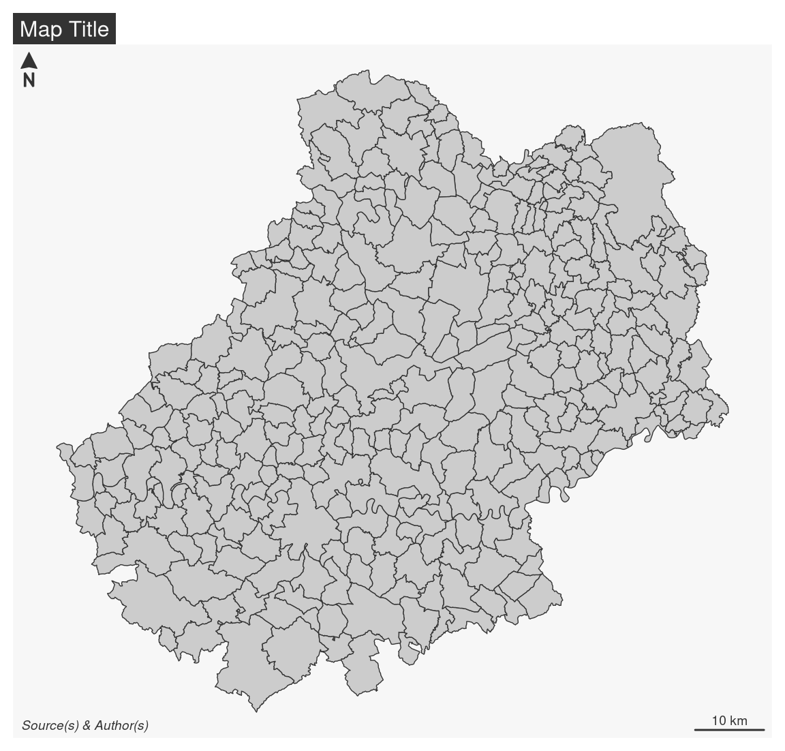

library(sf)
# import municipalities
mun <- st_read("data/lot.gpkg", layer = "communes", quiet = TRUE)
# import french departements
dep <- st_read("data/lot.gpkg", layer = "departements", quiet = TRUE)
# import restaurants
resto <- st_read("data/lot.gpkg", layer = "restaurants", quiet = TRUE)
# import someroads
road <- st_read("data/lot.gpkg", layer = "routes", quiet = TRUE)5 mapsf

5.1 Presentation
The spatial ecosystem of R is rich, dynamic and mature and several packages can be used to import, process and represent spatial data. The mapsf package (Giraud 2023) is a part of this ecosystem and can be used to create high-quality thematic maps.

In this document, we will mainly be using the mapsf package, which has fairly comprehensive functionality and is fairly easy to learn. What’s more, the package is relatively lightweight.
mapsf can be used to create most of the map types commonly used in statistical cartography (choropleth maps, typologies, proportional or graduated symbols, etc.).
For each type of map, a number of parameters can be used to customise the cartographic representation. These parameters are the same as those found in standard GIS or cartography software (for example, the choice of discretisations and colour palettes, changing the size of symbols or customising legends).
In addition to the data representation functions, other functions are dedicated to cartographic design (themes or graphic charters, legends, scales, orientation arrows, titles, credits, annotations, etc.), the creation of insets or map export.
Documentation
5.2 Map Types
mf_map() is the main function of the package, it displays map layers on a georeferenced plot.
mf_map() has three main arguments:
x, an sf object;var, the name(s) of a variable(s) to map;type, the map layer type.
Many parameters are available to fine tune symbologies and legends.
5.2.1 Sample data set
Import map layers from the geopackage file lot.gpkg.
5.2.2 Geometries / Base Maps
mf_map(x, type = "base") displays sf objects geometries.
library(mapsf)
# polygones
mf_map(x = mun, border = "white")
# departements (polygones, transparent background)
mf_map(x = dep, lwd = 2, col = NA, add = TRUE)
# roads (polylines)
mf_map(x = road, lwd = .7, col = "ivory4", add = TRUE)
# restaurants (points)
mf_map(x = resto, pch = 20, cex = .7, col = "darkred", add = TRUE)
# title
mf_title(txt = "Le Lot (46)")
5.2.3 Proportional Symbols
mf_map(x, var, type = "prop") displays symbols with areas proportional to a quantitative variable (stocks). The inches argument is used to customize the symbols sizes.
# plot municipalities
mf_map(x = mun)
# proportional symbols
mf_map(
x = mun,
var = "POPULATION",
type = "prop",
leg_title = "Total Population\n(2015)"
)
# Titre
mf_title("Population Distribution")5.2.4 Choropleth Map
In choropleth maps, areas are shaded according to the variation of a quantitative variable. They are used to represent ratios or indices. mf_map(x, var, type = "choro") displays choropleth maps . Arguments nbreaks, and breaks allow to customize the variable classification.
# Population density (inhab./km²) using sf::st_area()
mun$pop_density <- 1e6 * mun$POPULATION / as.numeric(st_area(mun))
mf_map(
x = mun,
var = "pop_density",
type = "choro",
breaks = "quantile",
nbreaks = 6,
pal = "Dark Mint",
lwd = 1,
leg_title = "Population Density\n(inh./km²)",
leg_val_rnd = 0
)
mf_title("Population Distribution (2018)")
Color palettes
Color palettes, defined with pal, can be created with mf_get_pal() or you can use palette names from hcl.pals().
mf_map(x = mun, var = "pop_density", type = "choro",
breaks = "quantile", nbreaks = 4,
pal = "Peach")
mf_title("Named palette")
ma_palette <- c("#F3CAD2", "#E08BB1", "#AF4F91", "#6D1C68")
mf_map(x = mun, var = "pop_density", type = "choro",
breaks = "quantile", nbreaks = 4,
pal = ma_palette)
mf_title("Vector of colors")
5.2.5 Typology Map
mf_map(x, var, type = "typo") displays a typology map of a qualitative variable. val_order is used to set the modalities order in the legend.
mf_map(
x = mun,
var = "STATUT",
type = "typo",
pal = c("aquamarine4", "yellow3","wheat"),
lwd = .7,
leg_title = ""
)
mf_title("Municipality Administrative Status")The val_order argument is used to order the modalities in the legend.
mf_map(
x = mun,
var = "STATUT",
type = "typo",
pal = c("aquamarine4", "yellow3","wheat"),
val_order = c("Préfecture", "Sous-préfecture", "Commune simple"),
lwd = .7,
leg_title = ""
)
mf_title("Municipality Administrative Status")5.2.6 Proportional Symbols using Choropleth Coloration
mf_map(x, var, type = "prop_choro") creates a map of symbols that are proportional to values of a first variable and colored to reflect the classification of a second variable.
mf_map(x = mun)
mf_map(
x = mun,
var = c("POPULATION", "pop_density"),
type = "prop_choro",
border = "grey50",
lwd = 1,
leg_title = c("Population", "Population Density\n(inh./km²)"),
breaks = "q6",
pal = "Magenta",
leg_val_rnd = c(0,1))
mf_title("Population Distribution (2018)")5.2.7 Proportional Symbols using Typology Coloration
mf_map(x, var, type = "prop_typo") creates a map of symbols that are proportional to values of a first variable and colored to reflect the modalities of a second qualitative variable.
mf_map(x = mun)
mf_map(
x = mun,
var = c("POPULATION", "STATUT"),
type = "prop_typo",
pal = c("aquamarine4", "yellow3","wheat"),
val_order = c("Préfecture", "Sous-préfecture", "Commune simple"),
leg_pos = "topleft",
leg_title = c("Population\n(2015)",
"Administrative Status"),
)
mf_title("Population Distribution (2018)")
Exercice
- Import the com.csv file. This dataset covers all municipalities and includes several additional variables:
- working population (ACT)
- working population in the industrial sector (IND)
- working population as a percentage of total population (SACT)
- share of the working population working in the industrial sector (SACT_IND)
- Join this dataset to the municipality layer.
- Create a map of the working population. Which type of map should be used? What choices does this involve?
- Create a map of the share of the working population in the total population. Which type of map should be used? What choices does this involve?
5.3 Map Layout
5.3.1 Titles, scale bar, North arrow, credits
mf_title() displays a title.
mf_arrow() displays a North arrow.
mf_scale() displays a scale bar.
mf_credits() plots credits at the bottom of the map.
mf_map(mun)
mf_title()
mf_scale()
mf_arrow()
mf_credits()
5.3.2 Legends
mf_legend() displays legends.
mf_map(mun)
mf_legend(
type = "prop",
val = c(1000,500,200,10),
inches = .4,
pos = "topleft"
)
mf_legend(
type = "choro",
val = c(0,10,20,30,40),
pal = "Greens",
pos = "bottomright",
val_rnd = 0
)
Interactive placement of layout elements
Some layout elements can be positioned interactively on the map by using “interactive” as position. This applies to legends, north arrow, scale bar.

5.3.3 Labels and Annotations
mf_label() is dedicated to the display of labels on a map. Use the overlap = FALSE argument to displays non overlapping labels.
mf_annotation() displays an annotation on a single spatial feature.
# select a municipality
cahors <- mun[mun$NOM_COM == "Cahors", ]
# Select municipalities intersecting Cahors
cahors_neighbors <- st_filter(x = mun, y = cahors, .predicate = st_intersects)
mf_map(cahors_neighbors)
mf_label(
x = cahors_neighbors,
var = "NOM_COM",
col= "black",
halo = TRUE,
overlap = FALSE,
lines = FALSE
)
mf_annotation(
x =c(582000, 6369000),
txt = "This place is\nvery specific",
halo = TRUE,
cex = 1.5
)5.3.4 Center the map on a specific area
The mf_map() function can start a map by centering it on a spatial object and setting transparent background and borders.
mf_map(cahors_neighbors, col = NA, border = NA)
mf_map(mun, add = TRUE)
mf_map(mun, "POPULATION", "prop", leg_frame = TRUE)5.3.5 Display several maps on the same figure
To plot several maps on the same figure, the user can use the mfrow argument of the par() function before plotting the maps. For example, use par(mfrow = c(1, 2)) (i.e. 1 row, 2 columns) to plot two maps side by side).
# define the figure layout (1 row, 2 columns)
opar <- par(mfrow = c(1, 2))
# first map
mf_map(mun)
mf_map(mun, "TER_F", "prop",
inches = .2,
val_max = 4000,
leg_pos = "topleft",
leg_title = "N.")
mf_title("Tertiary workers: Women")
# second map
mf_map(mun)
mf_map(mun, "TER_H", "prop",
inches = .2,
val_max = 4000,
leg_pos = NA)
mf_title("Men")
par(opar)5.3.6 Export maps
mf_export() exports maps in PNG or SVG formats.
The exported map width/height ratio will match the one of a spatial object.
If width is specified, then height is deduced from the width/height ratio of x, figure margins and title size.
If height is specified, then width is deduced from the width/height ratio of x, figure margins and title size.
mf_export(
x = mun,
filename = "img/mun_default.png",
width = 600
)
mf_map(mun, add = TRUE)
mf_title("Lot")
dev.off()In the following export we have added some space on the right side of the plot (50% of x width).
mf_export(
x = mun,
filename = "img/mun_expand.png",
width = 600,
expandBB = c(0, 0, 0, .5)
)
mf_map(mun, add = TRUE)
mf_title("Le Lot")
dev.off()
5.3.7 Add an image on the map
readPNG() from the png package can be used to add an image on a map.
library(png)
# image import
logo <- readPNG("img/Logo CG 46 - Bleu.png")
# image dimension
pp <- dim(logo)[2:1] * 20
# Coordinates of the topleft corner of com bounding box
xy <- st_bbox(com)[c(1,4)]
mf_map(com, col = "#D1914D", border = "white")
rasterImage(
image = logo,
xleft = xy[1],
ybottom = xy[2] - pp[2],
xright = xy[1] + pp[1],
ytop = xy[2]
)
5.3.8 Add a shadow to a layer
mf_shadow() plots the shadow of a polygon layer.
mf_shadow(com)
mf_map(com, add=TRUE)
Exercice
- Import the com.csv file. This dataset covers all municipalities and includes several additional variables:
- working population (ACT)
- working population in the industrial sector (IND)
- working population as a percentage of total population (SACT)
- share of the working population working in the industrial sector (SACT_IND)
- Join this dataset to the municipality layer.
- Create a map showing the working population in the industrial sector.
- Add the necessary layout elements.
- Make the map more intelligible, more explicit.
- Export the map in PNG format, 1000 pixels wide.